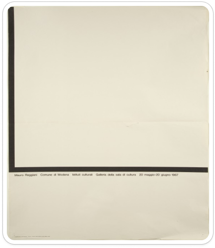

AG Fronzoni Studios
"description Feweth signs a
revolution hidden behind a
utopia"

1967 AG Fronzoni manifesto per la mostra di Mauro Reggiani.

1967 AG Fronzoni manifesto Situation Mailand 1967 bis 1978 Museum of Modern Art di New York.